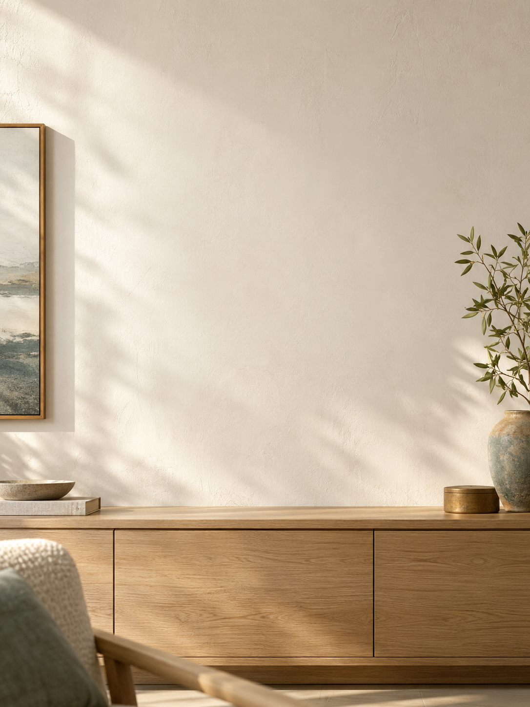
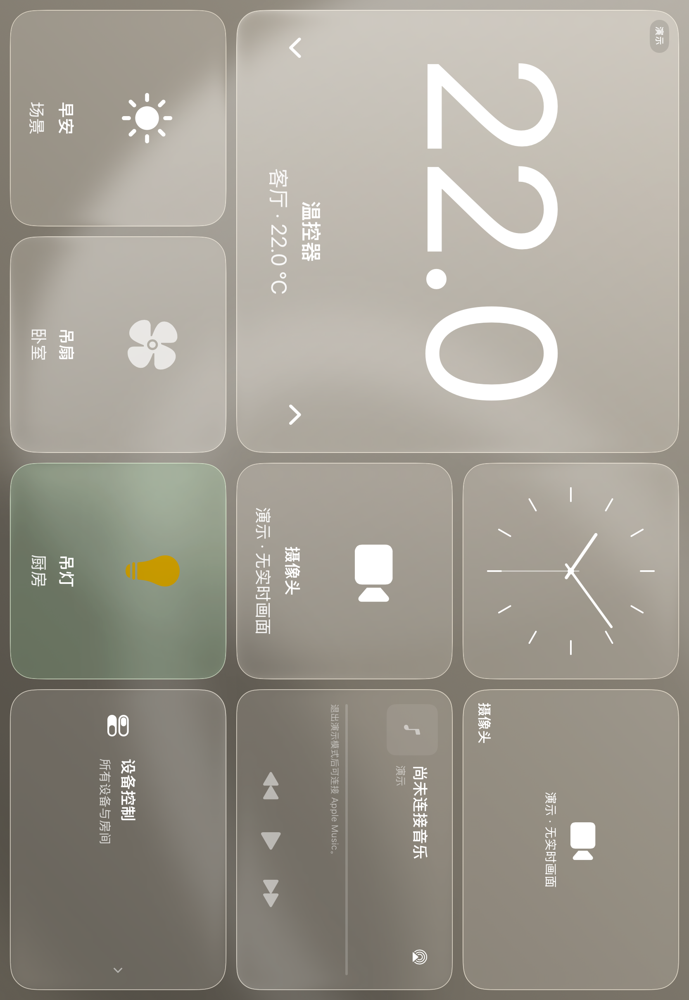
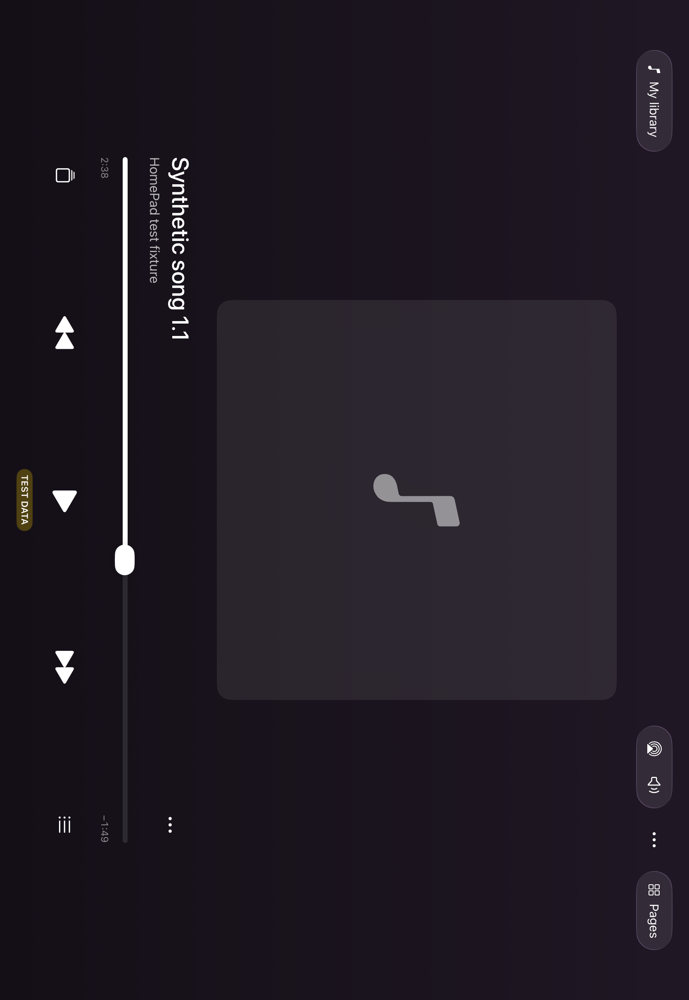
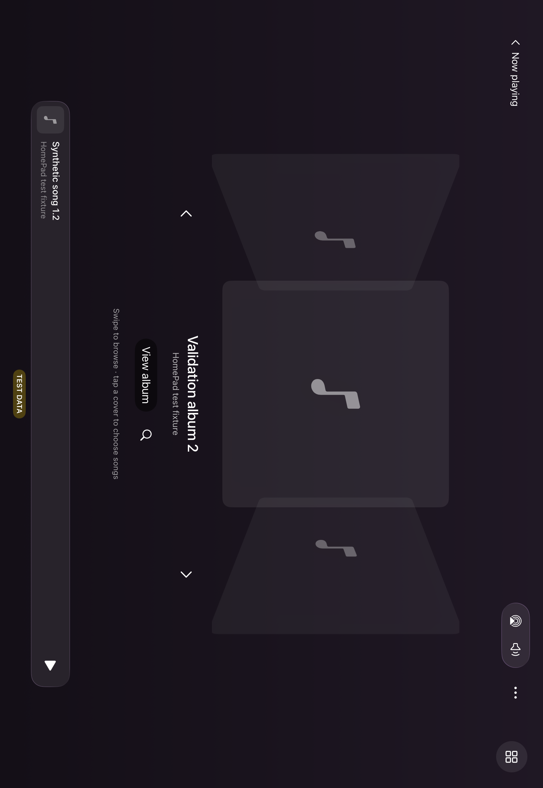
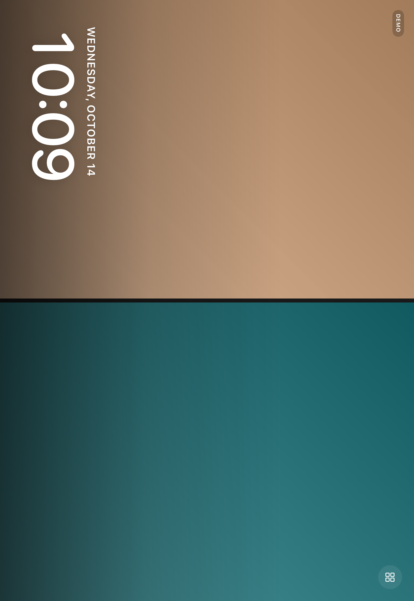
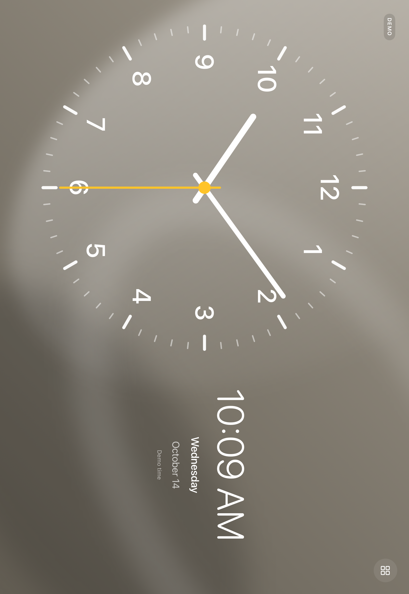
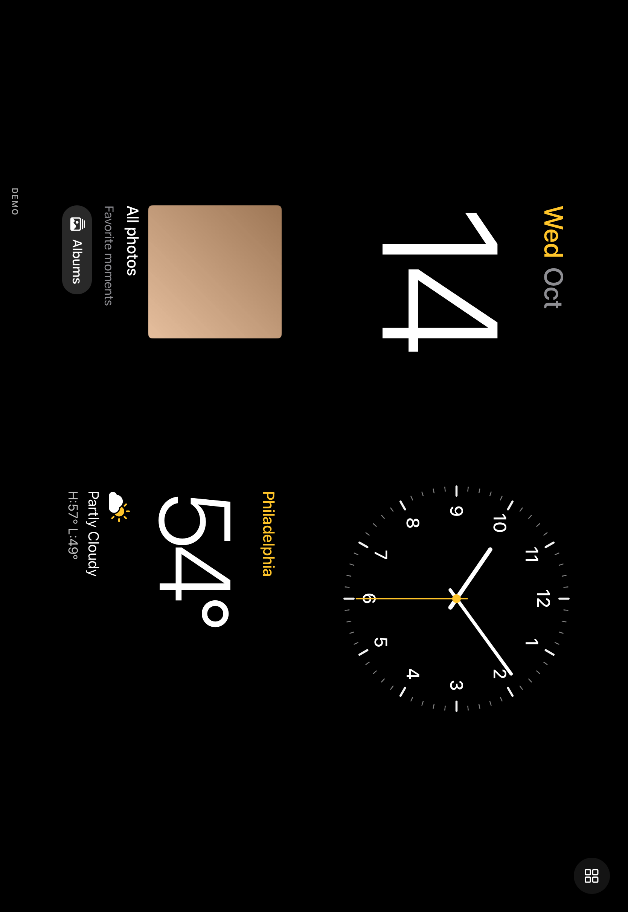

一个自己的家庭面板
把 iPad，
留给家的日常。
控灯、听歌、看照片。
让一块屏幕，多一点生活感。

家庭控制音乐照片时钟

一个自己的家庭面板
控灯、听歌、看照片。
让一块屏幕，多一点生活感。

每天顺手的几个动作
温控、灯光、场景，用清楚的大卡片放在一起。
开关支持的设备
打开设备详细调节
按习惯调整布局
给音乐，留一个大画面


让喜欢的画面，留在眼前
选照片，或选相册。把喜欢的日常慢慢轮播。

也可以把照片墙选作待机画面。
照片由你选择，按系统权限读取。
不操作的时候，也刚刚好
大时钟、照片待机，把屏幕变成空间的一部分。

按你的习惯选择屏幕模式
选择时钟，或选择照片墙
一块屏幕，几种日常

HOME / MUSIC
PHOTOS / CLOCK
从家庭控制，
到属于自己的
生活小屏。
HomeKit 设备与场景
Apple Music · Cover Flow
自选照片 · 相册 · 轮播
时钟 · 照片待机画面
选城市，看当前天气
授权后，只读未来七天
基于开源项目，做了自己的 iPad 家庭面板。
SwiftUI · Apple 系统框架 · 个人 fork 持续开发中